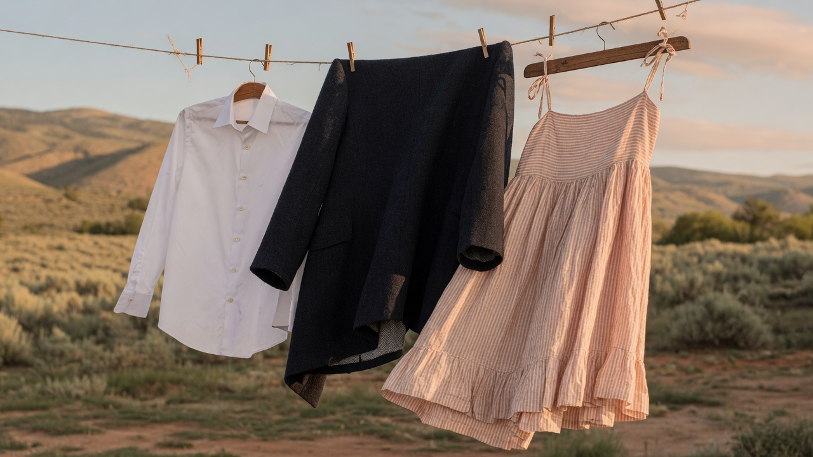

Boise · Orchard
244 S. Orchard St.
Boise, ID 83705

Boise · Meridian · Treasure Valley
Idaho’s first and only Certified Garment Care Professional (CGCP) and Certified Environmental Drycleaner (CED). Three stores. Free route pickup. One 24/7 kiosk.
244 S. Orchard St.
Boise, ID 83705
1800 S. Meridian Rd. #105
Meridian, ID 83642
6700 N Linder Rd Ste 144
Meridian, ID 83646
Prefer not to visit? Free route pickup and delivery for eligible dry cleaning and laundry in Boise, Meridian, and nearby Treasure Valley route areas. Confirm your address in the customer portal.
Printed offer
5%
Any qualifying local cleaner may be considered except TLC Cleaners, Idaho Dry Cleaners, Martinizing, Comet Cleaners, and On The Spot. Clothesline may decline unverifiable, expired, or non-comparable offers. Combining the Price Beat with another Clothesline discount or special requires manager approval. A manager makes the final decision.
Request route service in the Clothesline customer portal. New customers create an account there — we do not rebuild that login here.
Use your route bag or door hook so the driver can collect garments on pickup day.
Dry cleaning, laundry, and eligible household items come back on your regular route schedule.
Quoted from the live homepage. Not Google widgets.
“Love these guys -- free pickup and delivery like clockwork twice a week, and the price seems very reasonable. They have cleaned everything in my home from rugs to purses to pillows and bedding.”
Ann DeAngeli
“I used the 24 hour kiosk for the first time and it was so easy and convenient to use. I wish more dryclean businesses had options like this.”
Heather Luther
“Clothesline Cleaners has been doing my shirt laundry for decades. They pick up the dirty laundry bag at my home, and return the clean laundry a few days later in first-rate condition.”
Ron Meyers
“Quality is great, turn around time is fast. Drop off and pickup is easy, during or after business hours.”
John Kipper
Green dry cleaning
Clothesline prints that K4 is a premium dry cleaning solvent designed to be effective, gentle, and environmentally responsible. Idaho’s first and only ever Certified Environmental Drycleaner.